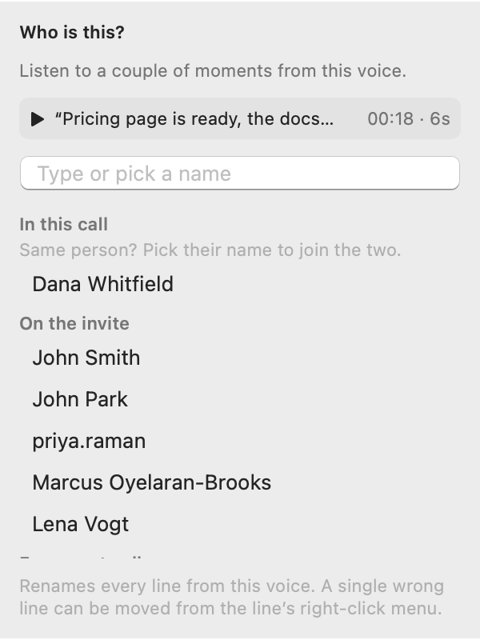

录音停止时（并且已设置助手），Parrot 会在后台撰写报告。报告涵盖的内容取决于通话的配置：默认是通话概述、痛点、要点和后续步骤；销售通话是预算、决策者和时间线；面试是评分卡。大多数还有一个辅导章节，关注你表现如何：发言比例、做得好的地方、下次可以尝试什么、出现了哪些异议以及是否得到处理。助手在通话中实时提出的洞察也会保存到会议中，所以通话中的任何内容都不会消失。Parrot 还会为通话命名，并在会议顶部写一两行说明，让你一眼就知道这是什么通话。带有报告的旧会议会在你第一次打开时获得这些内容。

报告用本地模型运行完全没问题，因为没有人在等它。在慢模型上花几分钟也无妨；准备好时就会出现。
会议没有报告？当通话期间助手处于关闭状态，或无法连接到它的 AI 时就会这样。打开会议的报告标签页并点击撰写报告。它使用你在设置中为报告选择的 AI，私密会议的报告仍会在你的 Mac 上撰写。
报告中的每个要点末尾都有一个小时间标签，例如 12:34。点击它可以看到支撑该要点的确切那一行、是谁说的，以及从这里播放按钮，或点在转录中显示跳转过去。Parrot 会在你的 Mac 上根据转录核对每一个标签。没人说话的时间不会有标签，没有对应行支撑的承诺或后续步骤会被标记为未核实，这样 AI 的失误就不会变成你以为某人做出的承诺。此功能推出之前写好的报告看起来和以前一样。
面试、投资路演等配置会按几项标准为通话打分。每一行显示满分 5 分的得分、理由以及支撑它的时刻；点击时间即可收听。

只有当分数指向通话中真实的时刻时才会显示。如果 AI 给出的分数没有对应时刻，该行会显示未引用时刻；如果通话中的信息不够，则显示证据不足。评分卡只评判所说的内容，绝不评判个人特质。它们帮助你做笔记：决定权在你。
修改了配置，或者用错误的配置录制了通话？重写报告…（会议页面右上角）会根据转录，用任意配置的报告重新撰写报告。会议会移到该配置下。

通话结束后，Parrot 会在你的 Mac 上区分不同的声音，并将其标记为说话人 1、说话人 2 等。在会议顶部，“除你之外听到了 2 个人”让你播放每个声音的短片段并为其命名。列表中会显示日历邀请中的所有人、本次通话中其他声音已有的名字，以及你过往通话中的名字，所以你输入过一次的名字会再次出现。输入可筛选列表，或输入新名字后按回车。当邀请中有两个人同名时，他们的邮箱会显示在名字下方，Parrot 会分别保存，例如“John (jpark)”。

如果某一行被分给了错误的人，右键点击它并选择这一行是。如果 Parrot 听到的人比通话中实际的人少，在那里选择新说话人…：该行会移给一位新说话人，你可以立即为其命名。检测说话人会重新运行检测，把每一行放回它检测到的位置，然后说明它听到了什么，例如“除你之外发现 1 个声音：Sam”。如果通话中只有一位其他人，就没有可供命名的列表：请改为点击转录中他们的说话人标签。
有时同一个人会被拆成两三位说话人。在本次通话中下选择他们的名字（或输入相同的名字），Parrot 会把他们视为同一个人：他们的行会合并，因此在每个列表和发言占比中只出现一次。旧会议在打开时也会以同样方式整理。
开启记住声音（设置 → 转录 → 说话人识别）后，你命名过一次的声音下次会被建议：“听起来像 Jeremy？”在你点击之前它始终只是建议，并且当通话有日历邀请时，只会建议邀请中的人。声纹始终留在你的 Mac 上。
实时说话人标签（同一位置，实验性，默认关闭）会在通话中完成这项工作：大约 45 秒后，对方的气泡会从“对方”变为说话人 1、说话人 2，新行会在约 15 秒内获得说话人。你可以在通话中点击某个声音的标签为其命名。助手看到的是同样的名字，所以卡片可以说明是谁的观点。标签一旦给出就保持不变，通话结束时的处理也会保留它们。它每次只检查最近一分钟的音频，所以长通话的开销不会比短通话多；使用电池时运行频率更低，在低电量模式下或 Mac 发热时会暂停。
报告以通话时间线开头：每分钟一根柱，显示你和对方的发言量对比；助手开启时还有一条显示配置主要指标（例如购买意向）的曲线，下方是编号的时刻。时刻包括通话中的实时提示、指标急剧变化的转折点（附上之前刚说的那句话），以及你标记的时刻。当助手还没有可用于该指标的依据时，该读数会被省略，因此曲线不会在通话开始时跌到零。默认显示前五个；显示全部可展开其余的。播放会跳到某个时刻，播放时变为停止。每次打开报告时提示都会根据转录重新统计，因此旧通话会随着 Parrot 的改进而变得更好；对方说话时你快速说一句“嗯”或“对”不算抢话。“你的发言”按说话的秒数而非字数统计，所以土耳其语通话和英语通话的衡量同样公平。
共享菜单中的将报告导出为 PDF会生成一份干净的 PDF，方便发给你的团队。它也在“文件 → 导出报告（PDF）”中，以及在侧边栏右键点击会议时的菜单中。PDF 开头是标题、通话内容、日期、时长、通话类型和参与者，然后是“通话进展如何”及其图表和关键时刻，接着是报告和辅导。转录、你的笔记和费用不包含在内。它会保存到你的“下载”文件夹。
你在通话中收藏的时刻会在报告中拥有单独的卡片，每个都带有时间（点击播放）和你的标签。可从其 … 菜单中重命名或移除。它们也会出现在转录中你标记的位置，以及 TXT 导出中。
共享菜单可以起草跟进邮件（它会出现在“报告”标签页，并带有“在‘邮件’中打开”）、将后续步骤添加到 Apple 提醒事项、导出 Markdown、将会议保存到你的文件夹，或发送到你的 webhook。参见连接。
每次会议都会显示其 AI 实际花费，并按实时卡片、报告、转录分项列出。本地模型显示 $0.00，因为它们确实不花钱。这些数字来自真实的 token 计数而非估算，所以你总能知道一次会议的帮助值多少钱。
从“文件”菜单、工具栏或在侧边栏右键点击会议来导出。导出转录（TXT）（⌘E）会写出一个纯文本文件，包含你的笔记、总结、辅导、助手的卡片以及完整转录。导出字幕（SRT）会给你一个带时间戳的字幕文件。两者都保存到你的“下载”文件夹。要与他人分享报告，请使用 PDF。